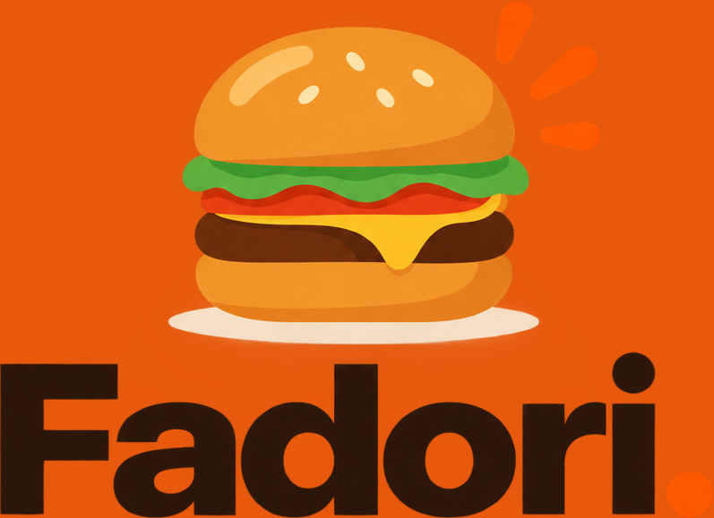

Cooperativa sin filas
La fila
ya no
es tuya.
Pide desde el salón o desde tu mesa. Tú sigues en lo tuyo y la comida te espera.

Escanea y pide.
- 1Abre la cámara
- 2Elige y pide
- 3Recoge cuando salga tu turno
FADORI · COOPERATIVA DEL INSTITUTO REMBRANDT

El recreo es para comer, no para formarse.
Todo el menú de la cooperativa en tu teléfono, con foto y precio. Pides, te dan turno y te avisamos cuando está listo.
- Sin filatu lugar lo guarda la app
- Sin gritar tu ordenllega escrita al mostrador
- Te avisaen la pantalla y en tu teléfono
Apunta tu cámara al código
- 1Escanea
- 2Pide
- 3Recoge
FADORI · COOPERATIVA DEL INSTITUTO REMBRANDT